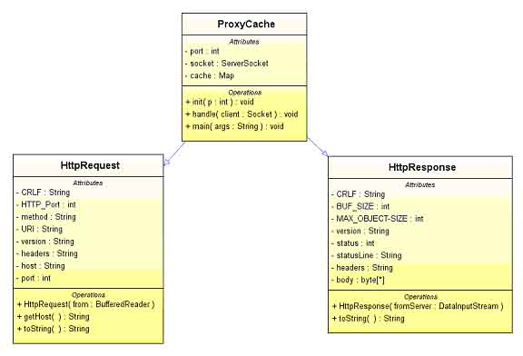

martian
Oliver Hine
HTTP in Clojure
(defn create-pet []
(http/post "https://api.com/create-pet/dog" {:as :json}))

Route params
(defn create-pet [species]
(http/post (format "https://api.com/create-pet/%s" species)
{:as :json}))

query params
(defn create-pet [species age]
(http/post (format "https://api.com/create-pet/%s" species)
{:as :json
:query-params {:age age}))

body params
(defn create-pet [species name age]
(http/post (format "https://api.com/create-pet/%s" species)
{:as :json
:query-params {:age age}
:body (json/encode {:name name))
:headers {"Content-Type" "application/json"}}))

metrics, environments, authentication...
(defn create-pet [metrics host port creds species name age]
(timing metrics "create-pet"
(http/post (format "https://%s:%s/create-pet/%s" host port species)
{:as :json
:query-params {:age age}
:body (json/encode {:name name))
:headers {"Content-Type" "application/json"
"Authorization" (str "Token" creds)}})))

Signal to noise ratio
(defn create-pet [metrics host port creds species name age]
(timing metrics "create-pet"
(http/post (format "https://%s:%s/create-pet/%s" host port species)
{:as :json
:query-params {:name name}
:body (json/encode {:age age))
:headers {"Content-Type" "application/json"
"Authorization" (str "Token" creds)}})))
The Server
(defn create-pet [request]
(let [species (get-in request [:route-params :species])
age (Integer/valueOf (get-in request [:query-params :age]))
name (-> request
:body
(json/decode keyword)
:name)]
(create-pet species name age)))
That's not a dog

Signatures
(fn create-pet [species name age])
This is a dog
Data describing data
{:route-params {:species Species}
:query-params {:age Age}
:body-params {:name Name}
API descriptions
(defhandler create-pet
{:parameters {:path-params {:species Species}
:query-params {:age Age}
:body-params {:name Name}}
:responses {201 {:body {:id Id}}}}
...)
Moves like Swagger
life on mars
Make a Martian
(def m (martian-http/bootstrap-swagger
"https://pedestal-api.herokuapp.com/swagger.json"))
Contact Martian
(martian/response-for m :create-pet {:name "Charlie"
:species "Dog"
:age 3})
What does it mean?
- Cleaner code
- Specification always up-to-date
- Easier refactoring
- Explicit knowledge
Interceptors

Security is everything

Authentication interceptor
(def authentication
{:name ::authentication
:enter (fn [ctx]
(assoc-in ctx [:request :headers "Authorization"]
"Token: 12456abc"))})
Update the call stack

Update the call stack
(def m (martian-http/bootstrap-swagger
"https://pedestal-api.herokuapp.com/swagger.json"
{:interceptors (concat martian/default-interceptors
[authentication
martian-http/encode-body
(martian-http/coerce-response)
martian-http/perform-request])}))
Timing is everything

Timing interceptor
(def timing
{:name ::timing
:enter (fn [ctx] (assoc ctx ::start (t/now)))
:leave (fn [ctx] (assoc ctx ::duration
(t/minus (t/now) (::start ctx))))})
Update the call stack (again!)

Update the call stack (again!)
(def m (martian-http/bootstrap-swagger
"https://pedestal-api.herokuapp.com/swagger.json"
{:interceptors (concat martian/default-interceptors
[authentication
martian-http/encode-body
(martian-http/coerce-response)
timing
martian-http/perform-request])}))
Interceptors as an API
- Better than multimethods
- Better than binding dynamic vars
- Better than arbitrary options maps
Always test the right thing

Stub servers
- Drift away from real life
- Manually written cases
- Slow to run
Mocking

martian-test
- Uses production definition - always correct
- Generative - complete
- Fast
- Readable error messages
martian-test example
(def m (-> (martian/bootstrap "https://petstore.com" api-definition)
(martian-test/respond-with :success)))
(martian/response-for m :create-pet {:name "Charlie"})
;; => ExceptionInfo Value cannot be coerced to match schema:
;; {:species missing-required-key}
(martian/response-for m :create-pet {:name "Charlie"
:species "Dog"
:age 3})
;; => {:status 201, :body {:id -3}}
Response schemas
(defhandler create-pet
{:parameters {:path-params {:species Species}
:query-params {:age Age}
:body-params {:name Name}}
:responses {201 {:body {:id Id}}
401 {:body {:message s/Str}}
402 {:body {:amount s/Int}}
403 {:body {:message s/Str}}
...}}
...)

http.cat
Generating responses
(def create-pet-responses
(martian-test/response-generator m :create-pet))
(generate create-pet-responses)
;; => {:status 200, :body {:id -1472372}}
Assumptions
No Swagger? No problem
(martian/bootstrap "https://api.org"
[{:route-name :create-pet
:path-parts ["/pets/" :species]
:method :put
:path-schema {:species s/Str}
:body-schema {:name s/Str
(s/optional-key :age) s/Int}}]
{:produces ["application/json"]
:consumes ["application/json"]})
Any implementation
Alternatives
TL;DR
- Separate your domain from implementation
- Describe data for great good
- Interceptor all the things
 oliyh/martian
oliyh/martian